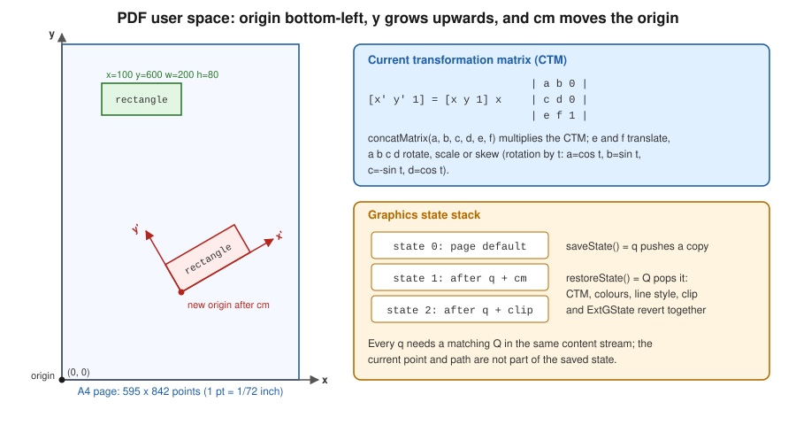

Low-level Canvas & Graphics
|
This content was generated with the assistance of AI and should be verified against the official documentation before being relied on in production. |
The layout elements of Layout Elements and
Tables are convenient, but they all end up as the same thing: a page
content stream, a sequence of PDF operators such as q, cm, re, f and Q (see
How a PDF File Works). PdfCanvas, in
com.itextpdf.kernel.pdf.canvas, is the class that writes those operators for you. You reach for it when the layout
model has no element for what you need: rules and frames that are not borders, logos and stamps at an exact position,
clipped or translucent artwork, custom charts, backgrounds, or content that must be switched on and off in a viewer. The
canvas is also what every renderer of the layout module uses internally when it draws, so everything learned here applies
to custom renderers. Versions are stated as of 2026-10-09: iText Core 9.8.0 on Java 21, and every example below was
compiled and run against exactly that version.
The running scenario is the Bookshelf Billing invoice. Here the canvas draws the letterhead band, the separators
and the "PAID" or "DRAFT" stamps that surround the table and paragraphs produced by the layout API. The Spring Boot code
that returns the bytes to a client is in Getting Started with Spring Boot,
and the lifecycle of the PdfDocument used below is explained in
Document Lifecycle.
What changed since the old PdfContentByte and PdfGraphics2D
Books written for iText 1 and 2 (including the classic 2006 text iText in Action, consulted for the concept order of this
page and not reproduced) draw through PdfContentByte, obtained from PdfWriter.getDirectContent(), and bridge Swing and
AWT drawing through PdfGraphics2D, createGraphics and PdfTemplate. In iText 7, 8 and 9:
-
PdfContentByteis replaced byPdfCanvas, created explicitly for aPdfPage, aPdfFormXObjector a rawPdfStream, with a fluent API: every drawing method returns the canvas, so calls chain naturally. -
PdfTemplateis replaced byPdfFormXObject, created once and painted any number of times. -
PdfGraphics2Dand the Swing, applet and Batik export route are not part of the iText 7+ core modules. To draw a chart or any vector graphic, either use the PdfCanvas operators of this page or render the chart to SVG and convert it with thesvgmodule, which is covered in Colours, Images & SVG (outdated finding O7 of this section’s source analysis). -
The "direct content" and "under content" split of the old
PdfWriteris now explicit: you choose which content stream of the page you append to, as shown in the section on drawing under and over layout content.
Java 21 idioms are used throughout the examples of this section (outdated finding O28): try-with-resources closes the
PdfDocument and, with it, flushes every page, records and text blocks are used where data is modelled, and generics
replace the raw collections of the old books. The code below uses try-with-resources and the typed, fluent API.
The Maven coordinates are those of the rest of the section. iText is licensed under the AGPLv3 or under a commercial
licence; the bouncy-castle-adapter is only needed for encryption and signing and is restated for completeness.
<dependency>
<groupId>com.itextpdf</groupId>
<artifactId>itext-core</artifactId>
<version>9.8.0</version>
<type>pom</type>
</dependency>
<dependency>
<groupId>com.itextpdf</groupId>
<artifactId>bouncy-castle-adapter</artifactId>
<version>9.8.0</version>
</dependency>The coordinate system and the current transformation matrix
A PDF page is a plane measured in points (1 point is 1/72 inch). The origin (0, 0) is the bottom-left corner of the
page, x grows to the right and y grows upwards, which is the opposite of most screen and image APIs. An A4 page is
595 by 842 points, so the top edge is pageSize.getTop(), which is 842. The page box is not always at the origin: a page
can define a crop box or media box starting at another point, so portable code derives positions from
page.getPageSize() (a Rectangle with getLeft(), getBottom(), getRight(), getTop()) instead of hard-coding
numbers. A page can also carry a /Rotate entry (a multiple of 90 degrees), in which case the viewer rotates the whole
page after drawing and your coordinates stay in the unrotated space.

Coordinates passed to a drawing method are user space coordinates. The current transformation matrix (CTM) maps user
space to the page: it starts as the identity, and the cm operator, exposed as concatMatrix(a, b, c, d, e, f),
multiplies it by a new matrix. The six numbers are the first two columns of a 3 by 3 affine matrix: e and f translate,
a and d scale, and a, b, c, d together rotate or skew (a rotation by an angle t uses cos t, sin t,
-sin t and cos t). Anything drawn afterwards, including text and images, is transformed by it. Matrices compose by
multiplication, so the order of successive concatMatrix calls matters: the last call is applied to the coordinates first.
The old trick of moving the origin to the centre of a stamp, rotating, and drawing at (0, 0) is exactly this.
Two relatives are worth knowing. An image or a form XObject is a unit square or its own bounding box that you place with a
matrix (addXObjectAt, addXObjectWithTransformationMatrix), and text has its own matrix, set per text object with
setTextMatrix and moveText, independent from the CTM (the CTM is applied on top of it).
The graphics state and the state stack
At any moment the canvas has a graphics state: CTM, fill and stroke colours, line width, cap, join, miter limit and dash
pattern, the clipping path, text state (font, size, spacing, rendering mode) and the extended graphics state
(transparency, blend mode, soft mask). saveState() writes q, which pushes a copy of the state, and restoreState()
writes Q, which pops it and restores everything at once. The rule that makes canvas code robust is simple: change the
state only between a saveState() and a restoreState() that you wrote yourself, on the same canvas and the same content
stream. Forgetting the restoreState() leaks a clip, a translucent fill or a rotation into everything drawn after it,
including the layout content that follows. The current point and the current path, in contrast, are not part of the saved
state: they are consumed by the painting operator.
The graphics state stack is limited in depth by viewers (28 levels is the commonly cited minimum), so deeply nested
saveState() calls in a loop that never restores are a defect, not a style.
Paths, painting and line styles
Drawing is a two-step process in PDF: first you construct a path with moveTo, lineTo, curveTo (a cubic Bezier with
two control points), rectangle, roundRectangle, circle, arc or ellipse and closePath, and then you paint it
with one painting operator: stroke() (outline), fill() (interior, non-zero winding rule), eoFill() (even-odd rule),
fillStroke() and eoFillStroke(), or endPath() which paints nothing and is used to end a path that was only meant to
become a clipping path. Painting without an open path does nothing.
Line styles are state: setLineWidth (a width of 0 is the thinnest line the device can render, which is rarely what you
want), setLineCapStyle (0 butt, 1 round, 2 projecting square), setLineJoinStyle (0 miter, 1 round, 2 bevel),
setMiterLimit and setLineDash(phase), setLineDash(on, phase), setLineDash(on, off, phase) or
setLineDash(pattern[], phase). Colours are set with setFillColor and
setStrokeColor taking a Color object (DeviceRgb, DeviceCmyk, DeviceGray, spot, pattern and the ColorConstants
shortcuts, described in Colours, Images & SVG); the low-level
setFillColorRgb, setFillColorGray and setFillColorCmyk variants take raw component values.
The first example draws the letterhead of the Bookshelf Billing invoice. The coordinate origin is the bottom-left, so the
band is placed at getTop() - 70. It shows the fluent API, a text object (beginText and endText, whose operators
cannot be nested), a dashed rule with round caps, a Bezier curve closed and filled and stroked with a single operator, and
a transformation matrix that translates and rotates a "PAID" box. Note that text is shown with the font object returned by
PdfFontFactory; fonts, encodings and subsetting are the subject of
Fonts & Unicode.
package com.example.billing;
import com.itextpdf.io.font.constants.StandardFonts;
import com.itextpdf.kernel.colors.ColorConstants;
import com.itextpdf.kernel.font.PdfFont;
import com.itextpdf.kernel.font.PdfFontFactory;
import com.itextpdf.kernel.geom.PageSize;
import com.itextpdf.kernel.geom.Rectangle;
import com.itextpdf.kernel.pdf.PdfDocument;
import com.itextpdf.kernel.pdf.PdfPage;
import com.itextpdf.kernel.pdf.PdfWriter;
import com.itextpdf.kernel.pdf.canvas.PdfCanvas;
import java.io.IOException;
/** Draws the Bookshelf Billing invoice letterhead with raw PdfCanvas operators. */
public final class CanvasBasics {
public static void main(String[] args) throws IOException {
try (PdfDocument pdf = new PdfDocument(new PdfWriter("target/canvas-basics.pdf"))) {
PdfPage page = pdf.addNewPage(PageSize.A4);
PdfCanvas canvas = new PdfCanvas(page);
PdfFont helvetica = PdfFontFactory.createFont(StandardFonts.HELVETICA);
PdfFont bold = PdfFontFactory.createFont(StandardFonts.HELVETICA_BOLD);
// 1. Filled rectangle band across the top (origin is the bottom-left corner)
Rectangle box = page.getPageSize();
canvas.saveState()
.setFillColor(ColorConstants.DARK_GRAY)
.rectangle(0, box.getTop() - 70, box.getWidth(), 70)
.fill()
.restoreState();
// 2. Text uses its own text object: BT ... ET (white fill kept inside q ... Q)
canvas.saveState()
.beginText()
.setFontAndSize(bold, 22)
.setFillColor(ColorConstants.WHITE)
.moveText(40, box.getTop() - 45)
.showText("Bookshelf Billing")
.endText()
.restoreState();
// 3. Dashed rule, round caps, 1.5 pt
canvas.saveState()
.setStrokeColor(ColorConstants.GRAY)
.setLineWidth(1.5f)
.setLineCapStyle(1) // round
.setLineDash(6, 4, 0) // 6 on, 4 off, phase 0
.moveTo(40, box.getTop() - 100)
.lineTo(box.getRight() - 40, box.getTop() - 100)
.stroke()
.restoreState();
// 4. A Bezier curve and a closed path filled and stroked in one operator
canvas.saveState()
.setStrokeColor(ColorConstants.BLUE)
.setFillColor(ColorConstants.YELLOW)
.setLineWidth(2)
.moveTo(60, 600)
.curveTo(100, 680, 180, 520, 240, 600)
.lineTo(240, 560)
.closePath()
.fillStroke()
.restoreState();
// 5. The CTM: translate + rotate, then draw at the new origin
canvas.saveState()
.concatMatrix(Math.cos(Math.PI / 6), Math.sin(Math.PI / 6),
-Math.sin(Math.PI / 6), Math.cos(Math.PI / 6), 350, 560)
.setStrokeColor(ColorConstants.RED)
.rectangle(0, 0, 120, 40)
.stroke()
.beginText()
.setFontAndSize(helvetica, 12)
.moveText(8, 14)
.showText("PAID")
.endText()
.restoreState();
}
}
}The three-argument setLineDash(6, 4, 0) sets a dash pattern of 6 points painted and 4 points skipped, starting at phase
0. The two-argument overload is setLineDash(unitsOn, phase), equal on and off lengths plus a phase, so setLineDash(6, 4)
would draw 6-point dashes and 6-point gaps shifted by 4 points. The white fill of the title is set inside
saveState()/restoreState() so that it does not leak into the later PAID text, which would otherwise be painted white
on white. Derived from
the iText Knowledge Base chapter on adding low-level content, Chapter 2: Adding low-level content,
and from the PdfCanvas API reference.
The jump-start tutorial counterpart is iText Jump-Start Tutorial: Chapter 2.
The tutorials may show older constructor or colour-constant spellings than iText 9.8; the compiled example above is the
reference for this page.
Clipping
A clipping path restricts where later painting is visible. You build a path, call clip() (non-zero winding rule) or
eoClip() (even-odd), and then end the path with endPath(). From that point until the matching restoreState(),
everything is painted only inside the path, and clipping can only ever shrink the visible area, never grow it, which is
the reason it must be wrapped in saveState(). Typical uses are circular photos, cropping a chart to its plot area and
clipping a gradient (shown in the soft-mask example below).
Transparency and blend modes
Transparency is part of the extended graphics state (PdfExtGState), applied with canvas.setExtGState(...):
-
setFillOpacity(float)andsetStrokeOpacity(float)set the constant alpha for filling and stroking (0 is invisible, 1 opaque); -
setBlendMode(PdfName)selects how the paint combines with what is already on the page:PdfExtGState.BM_NORMALand the otherBM_*constants, or thePdfNameconstants such asPdfName.Multiply,PdfName.Screen,PdfName.OverlayandPdfName.Darken. Blend modes require PDF 1.4, which every current writer produces, and a viewer that supports transparency; -
setSoftMask(PdfObject)applies a soft mask, described in the next section.
Transparency is a feature of the PDF/A-2 and later conformance levels but is forbidden in PDF/A-1; see PDF Standards & Conformance before using it in an archival invoice. The following example combines clipping, constant alpha, a blend mode, a reusable stamp and layers across two pages. Read the code first and then the sections on form XObjects and layers that explain the two remaining pieces.
Reusable content with PdfFormXObject
A PdfFormXObject (the successor of the old PdfTemplate) is a self-contained piece of content with its own bounding box,
resources and optionally a matrix. You draw it once with a PdfCanvas created from the XObject and then paint it as many
times as needed with addXObjectAt(xobject, x, y), addXObjectFittedIntoRectangle or addXObjectWithTransformationMatrix,
each of which writes a single Do operator. The saving is real: a logo or a watermark drawn on 5,000 invoice pages is stored
once, and each page only holds a reference. Form XObjects are also the basis of the "page X of Y" placeholder technique used
in the page on page events of this section (a placeholder created early and filled when the total is
known), and of the group used in a soft mask. A page of another PDF can be imported as a form XObject too, which is how
stamping and N-up layouts work (see the page on manipulating existing PDFs of this section).
Always call release() on a PdfCanvas you created for an XObject or content stream when you are done with it, so
the buffered operators are written; a canvas created for a page is flushed when the page is flushed.
Optional content: layers
Optional content groups (OCGs, shown by viewers as layers) let a viewer show or hide parts of a page: a draft stamp
that is visible on screen and hidden in print, internal notes, a technical drawing with selectable layers. In iText you
create a PdfLayer(name, pdf), choose its initial state with setOn(boolean), and wrap the drawing between
canvas.beginLayer(layer) and canvas.endLayer(), which write marked-content operators. The viewer lists them in its
layers panel. Layers can be nested (addChild), exclusive (PdfLayer.createTitle and radio groups through
PdfLayer.addOCGRadioGroup), and can have usage metadata (setPrint, setView, setZoom) so that a layer prints but is
not shown, or the reverse. OCGs require PDF 1.5 and are not permitted in PDF/A-1; PDF/A-2 and later allow them under
restrictions (all the configurations in the OCProperties must be valid, and /AS is not allowed).
package com.example.billing;
import com.itextpdf.io.font.constants.StandardFonts;
import com.itextpdf.kernel.colors.ColorConstants;
import com.itextpdf.kernel.font.PdfFont;
import com.itextpdf.kernel.font.PdfFontFactory;
import com.itextpdf.kernel.geom.PageSize;
import com.itextpdf.kernel.geom.Rectangle;
import com.itextpdf.kernel.pdf.PdfDocument;
import com.itextpdf.kernel.pdf.PdfName;
import com.itextpdf.kernel.pdf.PdfPage;
import com.itextpdf.kernel.pdf.PdfWriter;
import com.itextpdf.kernel.pdf.canvas.PdfCanvas;
import com.itextpdf.kernel.pdf.extgstate.PdfExtGState;
import com.itextpdf.kernel.pdf.layer.PdfLayer;
import com.itextpdf.kernel.pdf.xobject.PdfFormXObject;
import java.io.IOException;
/** Clipping, transparency, blend modes, reusable form XObjects and optional content layers. */
public final class CanvasAdvanced {
public static void main(String[] args) throws IOException {
try (PdfDocument pdf = new PdfDocument(new PdfWriter("target/canvas-advanced.pdf"))) {
PdfFont bold = PdfFontFactory.createFont(StandardFonts.HELVETICA_BOLD);
// A reusable stamp: drawn once, painted many times
PdfFormXObject stamp = new PdfFormXObject(new Rectangle(0, 0, 120, 40));
PdfCanvas stampCanvas = new PdfCanvas(stamp, pdf);
stampCanvas.setStrokeColor(ColorConstants.RED).setLineWidth(2)
.rectangle(1, 1, 118, 38).stroke()
.beginText().setFontAndSize(bold, 18).setFillColor(ColorConstants.RED)
.moveText(14, 12).showText("DRAFT").endText();
stampCanvas.release();
// Optional content: two layers, one hidden by default
PdfLayer notes = new PdfLayer("Internal notes", pdf);
notes.setOn(false);
PdfLayer logo = new PdfLayer("Letterhead", pdf);
for (int i = 0; i < 2; i++) {
PdfPage page = pdf.addNewPage(PageSize.A4);
PdfCanvas canvas = new PdfCanvas(page);
// Clipping: everything painted until restoreState() is limited to the circle
canvas.saveState()
.circle(150, 700, 50).clip().endPath()
.setFillColor(ColorConstants.ORANGE).rectangle(90, 640, 120, 120).fill()
.setFillColor(ColorConstants.BLUE).rectangle(150, 700, 120, 120).fill()
.restoreState();
// Transparency: constant alpha through an ExtGState
canvas.saveState()
.setExtGState(new PdfExtGState().setFillOpacity(0.4f).setStrokeOpacity(0.4f))
.setFillColor(ColorConstants.GREEN).rectangle(300, 650, 150, 100).fill()
.restoreState();
// Blend mode: multiply the magenta box with whatever is below
canvas.saveState()
.setFillColor(ColorConstants.CYAN).rectangle(60, 450, 120, 100).fill()
.setExtGState(new PdfExtGState().setBlendMode(PdfName.Multiply))
.setFillColor(ColorConstants.MAGENTA).rectangle(120, 480, 120, 100).fill()
.restoreState();
// Reuse the form XObject; each call writes only a "Do" operator
canvas.addXObjectAt(stamp, 300, 450 - 100 * i);
// Layers: begin/end marked content around the objects of a layer
canvas.beginLayer(logo)
.beginText().setFontAndSize(bold, 12).moveText(40, 800)
.showText("Bookshelf Billing").endText()
.endLayer();
canvas.beginLayer(notes)
.beginText().setFontAndSize(bold, 12).moveText(40, 300)
.showText("Internal: check credit limit").endText()
.endLayer();
}
}
}
}The example was run and the resulting file contains an /OCProperties dictionary with the "Internal notes" layer listed
among the off layers. The blend and opacity example uses the extended graphics state described in
PdfExtGState,
the layers use PdfLayer, and the stamp
uses PdfFormXObject.
All are derived from the low-level content chapter of the
iText Knowledge Base and the PdfCanvas API
(beginLayer, endLayer, addXObjectAt, setExtGState). Layers have no equivalent in the rest of the layout API, so
a layer inside flowed content is written with a custom renderer (see the page on renderers) that opens and closes the
layer around its own drawing.
Soft masks
A soft mask gives every pixel its own opacity instead of one constant alpha. The mask is a transparency group whose
content is converted either to its luminosity (black is transparent, white is opaque, grey is partial) or to its alpha;
the mask is attached through the SMask entry of an ExtGState. iText has no dedicated soft-mask class: you build a
PdfFormXObject for the group, draw into it (typically a gradient), build the small dictionary with /Type /Mask,
/S /Luminosity (or /Alpha) and /G pointing to the group, and pass it to PdfExtGState.setSoftMask(PdfObject).
The example fades a blue box in from left to right using an axial shading as the mask. The shading classes
(PdfAxialShading, PdfRadialShading and the mesh variants) live in com.itextpdf.kernel.pdf.colorspace.shading;
the same classes cover the other shading types.
package com.example.billing;
import com.itextpdf.kernel.colors.ColorConstants;
import com.itextpdf.kernel.geom.PageSize;
import com.itextpdf.kernel.geom.Rectangle;
import com.itextpdf.kernel.pdf.PdfDictionary;
import com.itextpdf.kernel.pdf.PdfDocument;
import com.itextpdf.kernel.pdf.PdfName;
import com.itextpdf.kernel.pdf.PdfPage;
import com.itextpdf.kernel.pdf.PdfWriter;
import com.itextpdf.kernel.pdf.canvas.PdfCanvas;
import com.itextpdf.kernel.pdf.colorspace.PdfDeviceCs;
import com.itextpdf.kernel.pdf.colorspace.shading.PdfAxialShading;
import com.itextpdf.kernel.pdf.extgstate.PdfExtGState;
import com.itextpdf.kernel.pdf.xobject.PdfFormXObject;
import java.io.IOException;
/** A luminosity soft mask: black hides, white shows, grey is partially transparent. */
public final class SoftMaskExample {
public static void main(String[] args) throws IOException {
try (PdfDocument pdf = new PdfDocument(new PdfWriter("target/soft-mask.pdf"))) {
PdfPage page = pdf.addNewPage(PageSize.A4);
PdfCanvas canvas = new PdfCanvas(page);
// 1. The mask group: a horizontal gradient from black (x=100) to white (x=400)
PdfFormXObject maskGroup = new PdfFormXObject(page.getPageSize());
PdfCanvas maskCanvas = new PdfCanvas(maskGroup, pdf);
PdfAxialShading gradient = new PdfAxialShading(new PdfDeviceCs.Rgb(),
100, 0, new float[] {0f, 0f, 0f}, 400, 0, new float[] {1f, 1f, 1f});
maskCanvas.saveState()
.rectangle(100, 500, 300, 120).clip().endPath()
.paintShading(gradient)
.restoreState();
maskCanvas.release();
// 2. The soft-mask dictionary: /S /Luminosity, /G the group
PdfDictionary mask = new PdfDictionary();
mask.put(PdfName.Type, PdfName.Mask);
mask.put(PdfName.S, PdfName.Luminosity);
mask.put(PdfName.G, maskGroup.getPdfObject());
// 3. Paint through the mask; the rectangle fades in from left to right
canvas.saveState()
.setExtGState(new PdfExtGState().setSoftMask(mask))
.setFillColor(ColorConstants.BLUE)
.rectangle(100, 500, 300, 120)
.fill()
.restoreState();
}
}
}The file was generated, and its content stream refers to an extended graphics state with /SMask whose /S is /Luminosity.
Soft masks follow the transparency model of ISO 32000, described in the
ISO 32000 sponsored standards page of the PDF Association; the API for the mask
group is PdfExtGState and the
gradient is PdfAxialShading.
Images with an alpha channel or an image mask create soft masks for you, so build one by hand only when the mask is
generated artwork; see the image masks in Colours, Images & SVG.
Drawing under and over layout content
The layout Document writes its content to the page content stream as it lays out elements. To draw something that
stays behind the text (a letterhead background, a watermark) or on top of it (a stamp), create a canvas on a
fresh content stream that PDF places before or after the existing ones: page.newContentStreamBefore() and
page.newContentStreamAfter(), wrapped as new PdfCanvas(stream, page.getResources(), pdf). This replaces the old
getDirectContentUnder() and getDirectContent() pair. The first overload new PdfCanvas(page) appends to the last
content stream and is right when you draw before the layout content or on a page you build yourself.
The example lays out an invoice header with the layout API and then adds a grey band under it and a translucent red circle
above it. The drawing happens after layout, on pdf.getFirstPage(). In real
code this would run from an end-of-page event handler (see the page on page events of this section),
which runs for every page after its content is complete.
package com.example.billing;
import com.itextpdf.kernel.colors.ColorConstants;
import com.itextpdf.kernel.geom.PageSize;
import com.itextpdf.kernel.pdf.PdfDocument;
import com.itextpdf.kernel.pdf.PdfPage;
import com.itextpdf.kernel.pdf.PdfWriter;
import com.itextpdf.kernel.pdf.canvas.PdfCanvas;
import com.itextpdf.kernel.pdf.extgstate.PdfExtGState;
import com.itextpdf.layout.Document;
import com.itextpdf.layout.element.Paragraph;
import java.io.IOException;
/** Mixes the layout API with low-level drawing underneath and on top of the flowed content. */
public final class UnderlayExample {
public static void main(String[] args) throws IOException {
try (PdfDocument pdf = new PdfDocument(new PdfWriter("target/underlay.pdf"));
Document document = new Document(pdf, PageSize.A4)) {
document.add(new Paragraph("Invoice INV-2026-0001").setFontSize(18));
document.add(new Paragraph("Total: 42.00 EUR"));
PdfPage page = pdf.getFirstPage();
// Content stream placed BEFORE the page content: a background that text can sit on
PdfCanvas under = new PdfCanvas(page.newContentStreamBefore(), page.getResources(), pdf);
under.saveState()
.setFillColor(ColorConstants.LIGHT_GRAY)
.rectangle(36, page.getPageSize().getTop() - 100, page.getPageSize().getWidth() - 72, 64)
.fill()
.restoreState();
under.release();
// Content stream placed AFTER the page content: a translucent stamp above everything
PdfCanvas over = new PdfCanvas(page.newContentStreamAfter(), page.getResources(), pdf);
over.saveState()
.setExtGState(new PdfExtGState().setFillOpacity(0.25f))
.setFillColor(ColorConstants.RED)
.circle(300, 500, 80)
.fill()
.restoreState();
over.release();
}
}
}The content stream methods are listed in the PdfPage API reference.
Layout content on a fixed area: Canvas
The layout module has a class that goes the other way: com.itextpdf.layout.Canvas takes a PdfCanvas (or a form
XObject) and a Rectangle, and lays out layout elements such as Paragraph and Table inside that fixed area, with
no page breaking. It is the tool for boxes at an exact position: the address window of an envelope letter, a label,
a signature block, or a QR code caption. Anything that does not fit is clipped silently, so size it generously or check the
result of layout through a renderer. See Layout Elements for
Canvas with paragraphs and Document Lifecycle for how it relates
to Document.
Operator reference
The table maps the methods used on this page to the PDF content-stream operators they write; knowing them is useful when you read a content stream in a debugging tool or in How a PDF File Works.
| PdfCanvas method | Operator | Effect |
|---|---|---|
|
|
Push and pop the graphics state |
|
|
Multiply the CTM |
|
|
Build a path |
|
|
Append a rectangle to the path |
|
|
Paint or discard the path |
|
|
Intersect the clipping path with the current path |
|
|
Line style |
|
|
Apply transparency, blend mode, soft mask |
|
|
Paint a form XObject or image |
|
|
Start and end optional content |
|
|
Text object boundaries |
Common mistakes
-
Unbalanced state. Every
saveState()needs arestoreState()on the same stream; an unbalanced pair is one of the most common causes of content that is clipped, translucent or rotated for the rest of the page. -
Wrong origin. Using a top-left origin copied from a screen API puts the content upside down or off the page; subtract from
pageSize.getTop(). -
Drawing before layout content that clears it. Content added with
new PdfCanvas(page)after layout appears on top; usenewContentStreamBefore()for backgrounds. -
Not releasing the canvas. Forgetting
release()on a canvas for an XObject leaves buffered operators unwritten. -
Transparency and layers in archival files. Check the conformance level first, as noted above.
References
-
iText Knowledge Base: Where is the origin (x,y) of a PDF page?
-
OpenPDF, the LGPL and MPL fork of the old iText API that keeps
PdfContentByte